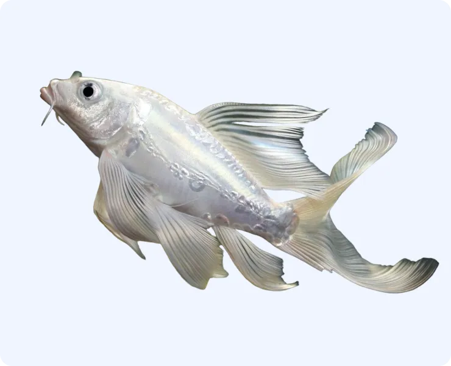

Рыба для пруда
Карп кои (вуалевый)
Цена и наличие
- 6-10 см25 BYN / шт.В наличии
- 10-12 см36 BYN / шт.В наличии
- 12-15 см53 BYN / шт.В наличии
- 15-20 см115 BYN / шт.В наличии
- 20-25 см180 BYN / шт.В наличии
- 25-30 см240 BYN / шт.В наличии
Данные на 23.11.2026.
Характеристики
- Окрас
- Белый, черный, золотистый, трёхцветный, черно-белый, красно-белый, пятнистые
- Сезонность
- Апрель-сентябрь
- Возраст
- Сеголетки, годовики
- Максимальный вес
- До 20 кг
- Продолжительность жизни
- Обычно 25–40 лет, при благоприятных условиях отдельные особи способны жить значительно дольше
- Половая зрелость
- В условиях умеренного климата обычно наступает примерно в 3–5 лет. Самцы, как правило, становятся половозрелыми раньше самок, а сроки созревания зависят от температуры воды, кормления и скорости роста
- Питается
- Вуалевый карп кои — всеядная рыба. В пруду он поедает личинок водных насекомых, червей, моллюсков, мелких ракообразных и другие животные организмы, а также водоросли, мягкие части растений и органический детрит. При декоративном содержании основу рациона должен составлять качественный полнорационный корм для кои
- Температура воды для активного питания и размножения
- Наиболее активно кои питаются и растут примерно при 20–25 °C. Нерест обычно начинается после устойчивого прогрева воды примерно до 18 °C, наиболее благоприятные условия для размножения создаются при температуре около 18–22 °C
- Условия пруда для содержания
- Необходим просторный пресноводный пруд с эффективной механической и биологической фильтрацией, хорошей аэрацией и стабильным качеством воды. Из-за длинных плавников желательно избегать острых камней, жестких декоративных элементов, незащищенных водозаборов и участков с постоянно сильным течением. Для круглогодичного содержания в Беларуси необходима достаточно глубокая незамерзающая зона
- Рост
- Сеголетки 100-300 г, двухлетки 300-800 г
Описание
Вуалевые карпы кои (бабочка карп кои, баттерфляй карп кои, дракон карп кои) — это вариант обычной кои с особенными длинными и густыми плавниками, что придает им изысканный и грациозный вид.
УСЛОВИЯ ОБИТАНИЯ
Вуалевый карп кои, также известный как длинноплавничный, Longfin или Butterfly Koi, — декоративная форма карпа кои с удлиненными грудными, брюшными, спинным и хвостовым плавниками. По основным биологическим требованиям он практически не отличается от обычного кои, однако длинные плавники требуют более внимательного отношения к устройству пруда и качеству воды. Кои — крупная и активная рыба, поэтому для длительного содержания необходим просторный водоем с эффективной системой фильтрации. Аммиак и нитриты в нормально работающем пруду должны оставаться на уровне, не определяемом тестами, а параметры воды желательно поддерживать стабильными без резких суточных колебаний. Хорошая аэрация особенно важна летом при высокой температуре, высокой плотности рыбы и интенсивном кормлении. В пруду необходимо предусмотреть достаточно свободного пространства для плавания. Сильное постоянное течение нежелательно: из-за большой площади длинных плавников вуалевому кои приходится расходовать больше энергии на движение против мощного потока. При этом умеренная циркуляция воды, необходимая для работы фильтрации и поддержания качества воды, полезна. Особое внимание следует уделять безопасности плавников. Камни, элементы декора и стенки водоема должны иметь гладкие поверхности, а заборные отверстия насосов и скиммеров необходимо защищать. Поврежденный длинный плавник может восстановиться при хорошем качестве воды, но постоянные травмы увеличивают вероятность бактериальных и грибковых поражений. Вуалевые кои миролюбивы и подходят для группового содержания с обычными карпами кои. При кормлении необходимо следить, чтобы длинноплавничные особи получали достаточное количество пищи, поскольку некоторые из них плавают немного медленнее обычных кои и могут проигрывать им конкуренцию за корм.
РАЗМНОЖЕНИЕ
Вуалевые карпы кои способны самостоятельно размножаться в пруду. Биология их нереста практически такая же, как у обычного карпа кои. В условиях умеренного климата нерест чаще всего приходится на конец весны и начало лета, когда вода устойчиво прогревается примерно до 18–22 °C. Перед нерестом самцы начинают активно преследовать готовую к размножению самку. Нерест обычно происходит на мелководных участках среди мягкой растительности или специального нерестового субстрата. Во время активного нереста длинные плавники могут повреждаться, поэтому в водоеме не должно быть острых камней и других травмоопасных элементов. Специальных гнезд кои не строят. Самка выметывает большое количество клейкой икры, а самцы одновременно оплодотворяют ее. Икра прикрепляется к водным растениям, корням, нерестовым щеткам и другим погруженным поверхностям. После нереста родители не проявляют заботы о потомстве. Взрослые кои могут поедать как икру, так и появившихся мальков, поэтому при целенаправленном разведении производителей после завершения нереста отделяют от икры. При температуре около 20–23 °C развитие икры обычно занимает примерно 3–5 суток. После вылупления личинки некоторое время используют запас желточного мешка, а затем начинают питаться мелким зоопланктоном и специализированными стартовыми кормами. При разведении вуалевых кои необходимо учитывать, что потомство может заметно различаться по длине плавников, форме тела, окраске и рисунку. Даже от качественных производителей не все мальки будут обладать одинаково выраженным длинноплавничным типом, поэтому при селекционном разведении проводят последующий отбор.
КОРМЛЕНИЕ
Вуалевый карп кои — всеядная рыба. В естественной среде пруда он способен поедать личинок насекомых, червей, моллюсков, ракообразных и другую мелкую животную пищу, а также водоросли, мягкий растительный материал и органические частицы. Основу питания при декоративном содержании лучше составлять из полнорационных специализированных кормов для кои. Они обеспечивают необходимые белки, жиры, углеводы, витамины и минералы для роста, поддержания иммунитета, формирования окраски и восстановления длинных плавников. Наиболее интенсивно кои питаются и растут в теплой воде примерно при 20–25 °C. В этот период корм можно давать небольшими порциями несколько раз в день, контролируя, чтобы рыбы полностью съедали предложенное количество. При высокой температуре особенно важно следить за кислородом, поскольку интенсивное кормление увеличивает нагрузку на фильтрацию и потребность рыб в кислороде. Осенью по мере охлаждения воды обмен веществ постепенно замедляется. При температуре ниже примерно 15 °C количество корма начинают снижать, а при устойчивом охлаждении ниже 8–10 °C кормление обычно прекращают или оставляют минимальным только при выраженной пищевой активности рыбы. Перекармливание вуалевых кои не ускоряет безопасный рост. Остатки пищи и продукты жизнедеятельности ухудшают качество воды, увеличивают содержание органики и создают дополнительную нагрузку на биологическую фильтрацию. Для хорошего роста длинных плавников одинаково важны полноценный рацион, чистая вода и отсутствие постоянных повреждений.
ЗИМОВКА
Вуалевый карп кои способен зимовать в открытом пруду в климатических условиях Беларуси, если водоем имеет достаточную глубину, не промерзает полностью и в нем сохраняется нормальный кислородный режим. По холодоустойчивости длинноплавничные кои в целом сопоставимы с обычными кои. Осенью по мере снижения температуры воды обмен веществ замедляется. Рыбы становятся менее активными, перемещаются в глубокие и спокойные участки пруда и значительно сокращают потребление пищи. Зимой они находятся в состоянии выраженного покоя, но не впадают в настоящую спячку. Основными рисками зимовки являются дефицит растворенного кислорода, накопление продуктов разложения и полное промерзание небольшого водоема. Перед зимой желательно удалить избыток листьев, отмирающей растительности и органических остатков, которые во время разложения расходуют кислород. Для поддержания газообмена используют аэрацию или оборудование, сохраняющее незамерзающий участок поверхности. При этом сильное перемешивание самой глубокой части водоема зимой нежелательно, поскольку может нарушить температурное расслоение воды и дополнительно охладить зимовальную зону. Кормление сокращают по мере охлаждения воды и прекращают после устойчивого снижения температуры до уровня, при котором рыбы перестают активно принимать пищу. Весной корм начинают давать постепенно после прогрева воды и восстановления нормальной активности кои.